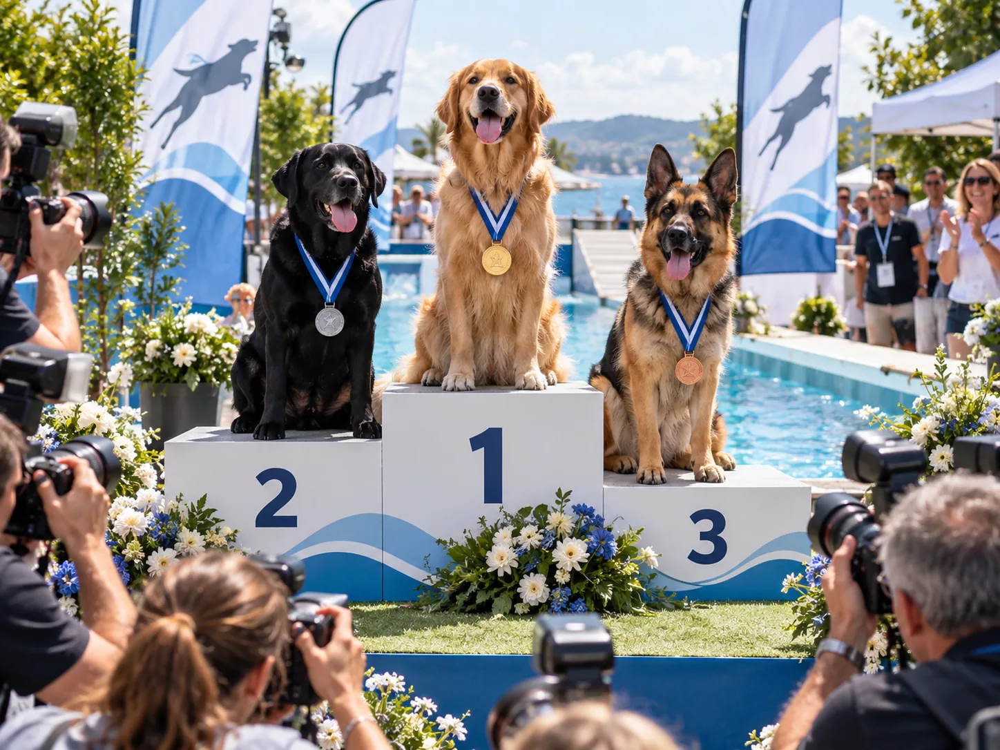

Campionato
Classifiche stagione
La classifica stagionale è la classifica principale. È separata in TPS1, TPS2 e TPS3; i riconoscimenti Champion e Champion Certificato sono distinti.

Storico complessivo
Classifica globale Aqua Trail
Somma i risultati storici del binomio senza spostare i punti tra TPS: punti complessivi, partecipazioni, penalità cumulative registrate negli eventi e Recall.
| Pos. | Binomio | Punti totali | Eventi | Prove | Penalità | Recall |
|---|